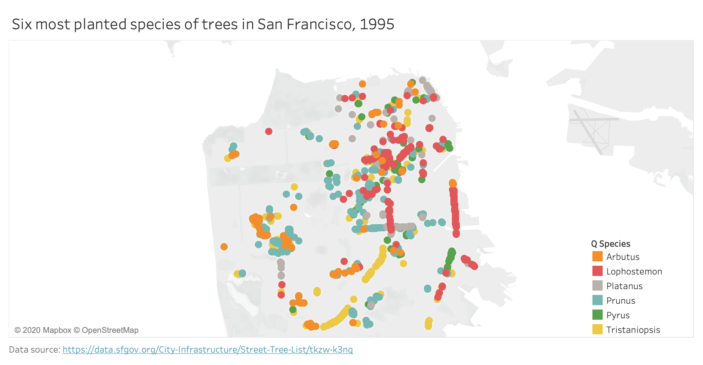

Question
Did San Franciscans like the same trees in 2007 as they did in 1995, or was there a shift in trends?
Encoding
These are non-proportional symbol maps, where each dot represents a tree planted in San Francisco, and is colored by its species.
Answer
It seems that out of the six most common species of trees that San Franciscans planted in the above years, the tree most popular species of trees have changed (for the exception of Arbutus, which has lost some popularity over the years). However, the tree least popular species out of the six (Prunus, Pyrus, and Tristaniopsis) seem to have not changed in popularity. This shows that although we like bringing new species to our landscapes, there are still trees that we don't want to give up on.
Planned Interactivity
I am thinking of implemented synchronized brushing for these maps, when hovering over a symbol on one map, all symbols with the same category on the other map will pop out. Other possible interactivity would be to create a single map and implement a filtering tool to be able to look at different years and different number of species. Mind that my reduced version of the dataset alone contains 158 species. Here, I am just looking at the most popular ones, excluding the fields that contain a generic species such as "Tree".